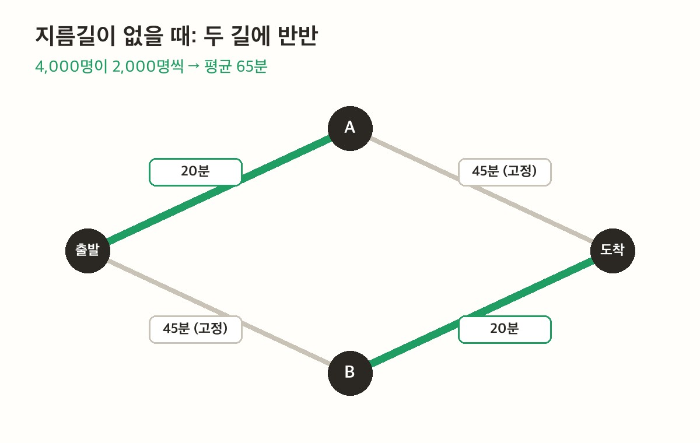
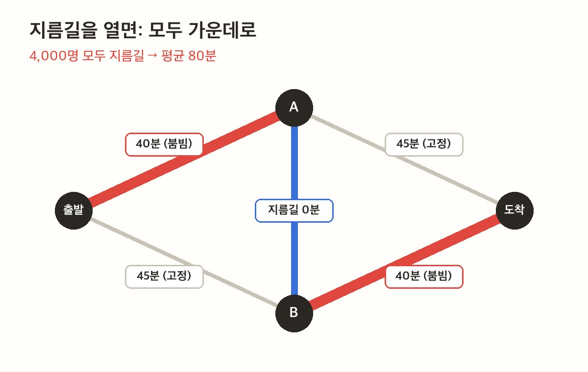
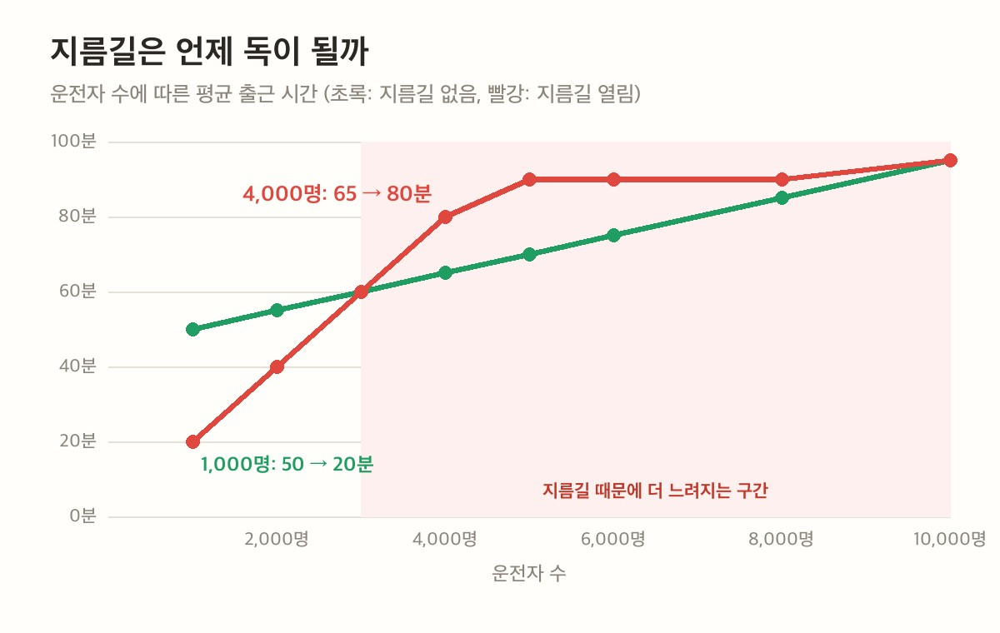

도로를 새로 뚫었는데 왜 더 막힐까(브라에스 역설)
더하기가 빼기가 되는 순간
출근길 사거리에 현수막이 걸렸다. "○○ 연결도로 개통." 몇 년 동안 펜스 너머로 공사 소리만 들리던 곳이다.
개통 날 아침, 내비게이션이 낯선 목소리로 말했다. "새로운 경로가 있습니다." 화면에 처음 보는 파란 선이 그어졌다. 괜히 설렜다. 이제 십 분은 일찍 도착하겠지.
첫 주는 정말 그랬다. 시계를 보며 혼자 웃었다. 세금이 이렇게 쓰이는 거구나.
그런데 한 달쯤 지나자 이상했다. 새 길 입구부터 줄이 생겼다. 도착 시각은 예전으로 돌아갔고, 어떤 날은 예전보다 늦었다. 길은 분명 하나 늘었는데. 그 설렘이 배신감으로 바뀌는 데는 한 달이면 충분했다.
누가 잘못한 걸까. 길을 잘못 만든 걸까, 우리가 잘못 달린 걸까.
· · ·
공짜 지름길 하나
컴퓨터 속에 아주 작은 도로망을 만들었다. 출발에서 도착까지 가는 길은 두 개다.
- 위쪽 길: 막히는 구간(출발→A) 다음에 늘 45분 걸리는 구간(A→도착)
- 아래쪽 길: 늘 45분 걸리는 구간(출발→B) 다음에 막히는 구간(B→도착)
막히는 구간은 차가 많을수록 느려진다. 운전자 4,000명은 저마다 조금이라도 빠른 길이 보이면 옮겨 간다. 그러자 두 길에 2,000명씩 나뉘었고, 누구나 65분에 도착했다.

이제 A와 B 사이에 다리를 하나 놓는다. 막히지도 않고, 0분이면 건너는 공짜 지름길이다.
여기서 잠깐 골라 보자. 지름길이 생긴 뒤 평균 출근 시간은
- A. 줄어든다
- B. 그대로다
- C. 늘어난다
나는 당연히 A라고 생각했다. 길이 늘었고, 그 길은 공짜니까.
결과는 C였다. 4,000명 모두가 지름길로 몰렸고, 평균 출근 시간은 65분에서 80분으로 늘었다. 길 하나를 더했더니 모두가 15분씩 더 걸렸다.

· · ·
아무도 혼자서는 돌아갈 수 없다
이유는 이랬다. 지름길이 열리자, 막히는 구간이 45분 구간보다 빨라 보였다. 그래서 사람들이 하나둘 "막히는 구간 → 지름길 → 막히는 구간"을 고르기 시작했다. 모두가 그렇게 하자, 막히는 두 구간에 4,000명이 한꺼번에 올라탔다. 하나에 20분이던 구간이 40분이 되었다. 40분 + 0분 + 40분.
그렇다면 예전 길로 돌아가면 되지 않을까. 혼자 돌아가 보면 40분 + 45분 = 85분이다. 지금보다 5분 더 걸린다. 그래서 아무도 돌아가지 않는다. 저마다 가장 빠른 길을 고른 선택이, 모두를 가장 느리게 만들었다. 아무도 혼자서는 빠져나올 수 없는 이 상태를 경제학에서는 내시 균형이라고 부른다.
1968년 독일의 수학자 디트리히 브라에스가 이 이상한 계산을 처음 정리했다. 그래서 브라에스 역설이다.
그런데 지름길이 늘 독은 아니었다. 운전자 수를 바꿔 보니 이랬다.

운전자가 1,000명뿐일 때는 지름길 덕에 50분이 20분으로 줄었다. 길이 한산하면 막히는 구간도 빠르니까. 하지만 3,000명을 넘자 지름길은 오히려 시간을 늘렸다. 붐빌 때만 독이 되는 지름길. 개통 첫 주가 빨랐던 이유도 어쩌면 아직 모두가 그 길을 몰랐기 때문일지 모른다.
반대 실험도 해 보았다. 지름길이 열린 채로 시작해서 중간에 막았더니, 평균 80분이던 출근 시간이 다시 65분으로 돌아왔다. 실제로 서울은 2003년부터 청계고가도로를 헐었다. 큰 교통 대란을 걱정했지만, 우려했던 혼란은 일어나지 않았다는 평가가 많다.
지름길을 열고 닫고, 운전자 수를 바꿔 보며 역설이 생기는 순간을 직접 찾아보자.
→ 브라에스 역설 실험, 직접 돌려 보기
· · ·
모두가 몰리는 빠른 길
이 역설은 도로 밖에서 더 자주 만난다.
어느 팀에 "급한 건은 팀장에게 바로 메신저로"라는 지름길이 생겼다고 해 보자. 원래는 담당자를 거쳐 정해진 회의에서 처리하던 일들이다. 처음 며칠은 정말 빨랐다. 그런데 모두가 그 길이 가장 빠르다는 걸 알게 되자, 모든 일이 팀장 한 사람에게 몰렸다. 이제는 급한 일도, 급하지 않은 일도 팀장의 답장 앞에서 기다린다.
여기서도 혼자 예전 방식으로 돌아가면 손해다. 다른 사람들이 다 바로 연락하는데 나만 회의를 기다리면, 내 일만 늦어진다. 그래서 아무도 돌아가지 않는다. 지름길을 닫자고 말할 수 있는 건, 길 전체를 보는 사람뿐이다.
음식 배달 앱의 "1위 맛집"도 비슷하다. 모두가 가장 빠르고 맛있다는 집을 고르는 순간, 그 집은 주문이 밀려 가장 느린 집이 된다.
· · ·
다시 그 사거리다. 현수막은 몇 달 사이 햇볕에 바래 글자가 희미해졌다.
내비게이션은 오늘도 새 길을 안내한다. 나는 그대로 따른다. 혼자 돌아가 봐야 5분 더 늦을 뿐이라는 걸 이제 아니까. 다만 신호를 기다리며, 바랜 현수막을 조금 다른 눈으로 본다. 어떤 길은 더해서가 아니라 빼서 넓어진다. 다음에 뭔가를 더하자는 회의가 열리면, 이번엔 빼는 것도 후보에 올려 볼 생각이다.
여러분 동네에도 새 길이 생겼는데 오히려 더 막힌 곳이 있나요? 길이든 회사든, 댓글로 들려주세요.
덧붙임. 글 속의 숫자는 사이트 시뮬레이션 모델 결과다(운전자 4,000명, 막히는 구간은 이용자 1명당 0.01분, 고정 구간 45분, 지름길 0분, 운전자들이 더 빠른 길이 있으면 옮기는 과정을 180번 반복, 시드 1. 이론 균형값과 같음). 운전자 수 그래프는 이론 균형값이다. 실제 도로의 기록이 아니다. 근거: D. Braess (1968), "Über ein Paradoxon aus der Verkehrsplanung", Unternehmensforschung 12. 청계고가도로 철거(2003~2005)의 교통 영향에는 대중교통 개편 등 다른 요인도 함께 있었다. 그림은 직접 그린 도로망과 그래프이며, 글 정리에 AI(Claude)의 도움을 받았다.
— 시뮬라티오 랩, Lab장
이 이야기, 영상과 실험으로 더 보기
 🎬 롱폼 영상
🎬 롱폼 영상 📺 채널 구독
📺 채널 구독휴대폰 카메라로 QR을 비추면 바로 열려요 · 실험 80여 개는 simulatiolab.com
네이버 블로그로 옮기기
① 제목 → 제목 칸 ⌘V · ② 본문 → 본문 ⌘V (사진도 함께 붙어요. 안 붙으면 사진만 따로 올리기) · ③ 태그 → 발행 창 태그 칸 · ④ 카테고리 돌려 보는 실험실 · 주제 교육·학문 · ⑤ 발행 뒤 네이버 주소를 content/10-braess.md 의 naver_url에 적기
🧪 직접 돌려 보기 · ▶ 쇼츠 영상 · 🎬 롱폼 영상 · 📺 채널 구독
출근길 사거리에 현수막이 걸렸다. "○○ 연결도로 개통." 몇 년 동안 펜스 너머로 공사 소리만 들리던 곳이다.
개통 날 아침, 내비게이션이 낯선 목소리로 말했다. "새로운 경로가 있습니다." 화면에 처음 보는 파란 선이 그어졌다. 괜히 설렜다. 이제 십 분은 일찍 도착하겠지.
첫 주는 정말 그랬다. 시계를 보며 혼자 웃었다. 세금이 이렇게 쓰이는 거구나.
그런데 한 달쯤 지나자 이상했다. 새 길 입구부터 줄이 생겼다. 도착 시각은 예전으로 돌아갔고, 어떤 날은 예전보다 늦었다. 길은 분명 하나 늘었는데. 그 설렘이 배신감으로 바뀌는 데는 한 달이면 충분했다.
누가 잘못한 걸까. 길을 잘못 만든 걸까, 우리가 잘못 달린 걸까.
· · ·
공짜 지름길 하나
컴퓨터 속에 아주 작은 도로망을 만들었다. 출발에서 도착까지 가는 길은 두 개다.
- 위쪽 길: 막히는 구간(출발→A) 다음에 늘 45분 걸리는 구간(A→도착)
- 아래쪽 길: 늘 45분 걸리는 구간(출발→B) 다음에 막히는 구간(B→도착)
막히는 구간은 차가 많을수록 느려진다. 운전자 4,000명은 저마다 조금이라도 빠른 길이 보이면 옮겨 간다. 그러자 두 길에 2,000명씩 나뉘었고, 누구나 65분에 도착했다.

지름길이 없을 때: 두 길에 반반, 모두 65분
이제 A와 B 사이에 다리를 하나 놓는다. 막히지도 않고, 0분이면 건너는 공짜 지름길이다.
여기서 잠깐 골라 보자. 지름길이 생긴 뒤 평균 출근 시간은
- A. 줄어든다
- B. 그대로다
- C. 늘어난다
나는 당연히 A라고 생각했다. 길이 늘었고, 그 길은 공짜니까.
결과는 C였다. 4,000명 모두가 지름길로 몰렸고, 평균 출근 시간은 65분에서 80분으로 늘었다. 길 하나를 더했더니 모두가 15분씩 더 걸렸다.

지름길을 열면: 모두가 막히는 두 구간을 다 지나고, 80분
· · ·
아무도 혼자서는 돌아갈 수 없다
이유는 이랬다. 지름길이 열리자, 막히는 구간이 45분 구간보다 빨라 보였다. 그래서 사람들이 하나둘 "막히는 구간 → 지름길 → 막히는 구간"을 고르기 시작했다. 모두가 그렇게 하자, 막히는 두 구간에 4,000명이 한꺼번에 올라탔다. 하나에 20분이던 구간이 40분이 되었다. 40분 + 0분 + 40분.
그렇다면 예전 길로 돌아가면 되지 않을까. 혼자 돌아가 보면 40분 + 45분 = 85분이다. 지금보다 5분 더 걸린다. 그래서 아무도 돌아가지 않는다. 저마다 가장 빠른 길을 고른 선택이, 모두를 가장 느리게 만들었다. 아무도 혼자서는 빠져나올 수 없는 이 상태를 경제학에서는 내시 균형이라고 부른다.
1968년 독일의 수학자 디트리히 브라에스가 이 이상한 계산을 처음 정리했다. 그래서 브라에스 역설이다.
그런데 지름길이 늘 독은 아니었다. 운전자 수를 바꿔 보니 이랬다.

운전자가 적을 땐 지름길이 약, 붐비면 독
운전자가 1,000명뿐일 때는 지름길 덕에 50분이 20분으로 줄었다. 길이 한산하면 막히는 구간도 빠르니까. 하지만 3,000명을 넘자 지름길은 오히려 시간을 늘렸다. 붐빌 때만 독이 되는 지름길. 개통 첫 주가 빨랐던 이유도 어쩌면 아직 모두가 그 길을 몰랐기 때문일지 모른다.
반대 실험도 해 보았다. 지름길이 열린 채로 시작해서 중간에 막았더니, 평균 80분이던 출근 시간이 다시 65분으로 돌아왔다. 실제로 서울은 2003년부터 청계고가도로를 헐었다. 큰 교통 대란을 걱정했지만, 우려했던 혼란은 일어나지 않았다는 평가가 많다.
지름길을 열고 닫고, 운전자 수를 바꿔 보며 역설이 생기는 순간을 직접 찾아보자.
→ 브라에스 역설 실험, 직접 돌려 보기
· · ·
모두가 몰리는 빠른 길
이 역설은 도로 밖에서 더 자주 만난다.
어느 팀에 "급한 건은 팀장에게 바로 메신저로"라는 지름길이 생겼다고 해 보자. 원래는 담당자를 거쳐 정해진 회의에서 처리하던 일들이다. 처음 며칠은 정말 빨랐다. 그런데 모두가 그 길이 가장 빠르다는 걸 알게 되자, 모든 일이 팀장 한 사람에게 몰렸다. 이제는 급한 일도, 급하지 않은 일도 팀장의 답장 앞에서 기다린다.
여기서도 혼자 예전 방식으로 돌아가면 손해다. 다른 사람들이 다 바로 연락하는데 나만 회의를 기다리면, 내 일만 늦어진다. 그래서 아무도 돌아가지 않는다. 지름길을 닫자고 말할 수 있는 건, 길 전체를 보는 사람뿐이다.
음식 배달 앱의 "1위 맛집"도 비슷하다. 모두가 가장 빠르고 맛있다는 집을 고르는 순간, 그 집은 주문이 밀려 가장 느린 집이 된다.
· · ·
다시 그 사거리다. 현수막은 몇 달 사이 햇볕에 바래 글자가 희미해졌다.
내비게이션은 오늘도 새 길을 안내한다. 나는 그대로 따른다. 혼자 돌아가 봐야 5분 더 늦을 뿐이라는 걸 이제 아니까. 다만 신호를 기다리며, 바랜 현수막을 조금 다른 눈으로 본다. 어떤 길은 더해서가 아니라 빼서 넓어진다. 다음에 뭔가를 더하자는 회의가 열리면, 이번엔 빼는 것도 후보에 올려 볼 생각이다.
💡 오늘의 인사이트
✔ 더하기 전에 빼기를 후보에 올리자. 새 회의, 새 앱, 새 단톡방, 새 결재 단계. 일이 막힐 때 우리는 길을 하나 더 내고 싶어진다. 하지만 때로는 하나를 닫는 것이 모두를 빠르게 한다.
✔ 모두에게 최선인 선택의 합이, 모두에게 최선은 아니다. 저마다 똑똑하게 고른 결과가 모두를 느리게 할 수 있다. 그럴 때 필요한 건 더 똑똑한 개인이 아니라, 전체를 보는 작은 규칙이다.
✔ "사람이 몰리면?"을 꼭 시험해 보자. 한산할 때 약이던 지름길이 붐비면 독이 된다. 새 제도나 새 창구는 처음 일주일이 아니라 모두가 알게 된 다음 달로 판단하자.
여러분 동네에도 새 길이 생겼는데 오히려 더 막힌 곳이 있나요? 길이든 회사든, 댓글로 들려주세요.
덧붙임. 글 속의 숫자는 사이트 시뮬레이션 모델 결과다(운전자 4,000명, 막히는 구간은 이용자 1명당 0.01분, 고정 구간 45분, 지름길 0분, 운전자들이 더 빠른 길이 있으면 옮기는 과정을 180번 반복, 시드 1. 이론 균형값과 같음). 운전자 수 그래프는 이론 균형값이다. 실제 도로의 기록이 아니다. 근거: D. Braess (1968), "Über ein Paradoxon aus der Verkehrsplanung", Unternehmensforschung 12. 청계고가도로 철거(2003~2005)의 교통 영향에는 대중교통 개편 등 다른 요인도 함께 있었다. 그림은 직접 그린 도로망과 그래프이며, 글 정리에 AI(Claude)의 도움을 받았다.
— 시뮬라티오 랩, Lab장
이 이야기, 영상과 실험으로 더 보기

🧪 직접 돌려 보기: simulatiolab.com/braess
▶ 쇼츠 영상: youtube.com/shorts/DIUHq6UK9Zs
🎬 롱폼 영상: youtu.be/UEsRhXsq7wA
📺 채널 구독: www.youtube.com/@simulatiolab?sub_confirmation=1
· · ·
📮 다음 편 예고 · 2026. 12. 10. (목)
아무도 원하지 않았는데 동네가 갈라지는 이유(셸링 분리 모델)
이웃 여덟 명 중 세 명만 나와 같으면 괜찮다는, 꽤 너그러운 사람들의 마을. 처음엔 두 색 집이 반반 뒤섞여, 이웃의 절반쯤이 같은 색이었다. 불편한 사람만 조용히 이사하게 했더니 열 번 만에 지도가 달라졌다. 같은 색 이웃은 몇 %가 되었을까? 50%, 60%, 75%. 하나를 골라 두자.
이웃 추가해 두시면 새 글이 올라올 때 알려 드려요.
🧪 직접 돌려 보기 · ▶ 쇼츠 영상 · 🎬 롱폼 영상 · 📺 채널 구독
출근길 사거리에 현수막이 걸렸다.
"○○ 연결도로 개통."
몇 년 동안 펜스 너머로 공사 소리만 들리던 곳이다.
개통 날 아침,
내비게이션이 낯선 목소리로 말했다.
"새로운 경로가 있습니다."
화면에 처음 보는 파란 선이 그어졌다.
괜히 설렜다.
이제 십 분은 일찍 도착하겠지.
첫 주는 정말 그랬다.
시계를 보며 혼자 웃었다.
세금이 이렇게 쓰이는 거구나.
그런데 한 달쯤 지나자 이상했다.
새 길 입구부터 줄이 생겼다.
도착 시각은 예전으로 돌아갔고,
어떤 날은 예전보다 늦었다.
길은 분명 하나 늘었는데.
그 설렘이 배신감으로 바뀌는 데는 한 달이면 충분했다.
누가 잘못한 걸까.
길을 잘못 만든 걸까, 우리가 잘못 달린 걸까.
· · ·
공짜 지름길 하나
컴퓨터 속에 아주 작은 도로망을 만들었다.
출발에서 도착까지 가는 길은 두 개다.
- 위쪽 길: 막히는 구간(출발→A) 다음에 늘 45분 걸리는 구간(A→도착)
- 아래쪽 길: 늘 45분 걸리는 구간(출발→B) 다음에 막히는 구간(B→도착)
막히는 구간은 차가 많을수록 느려진다.
운전자 4,000명은 저마다 조금이라도 빠른 길이 보이면 옮겨 간다.
그러자 두 길에 2,000명씩 나뉘었고,
누구나 65분에 도착했다.
지름길이 없을 때: 두 길에 반반, 모두 65분
이제 A와 B 사이에 다리를 하나 놓는다.
막히지도 않고,
0분이면 건너는 공짜 지름길이다.
여기서 잠깐 골라 보자.
지름길이 생긴 뒤 평균 출근 시간은
- A. 줄어든다
- B. 그대로다
- C. 늘어난다
나는 당연히 A라고 생각했다.
길이 늘었고, 그 길은 공짜니까.
결과는 C였다.
4,000명 모두가 지름길로 몰렸고,
평균 출근 시간은 65분에서 80분으로 늘었다.
길 하나를 더했더니 모두가 15분씩 더 걸렸다.
지름길을 열면: 모두가 막히는 두 구간을 다 지나고, 80분
· · ·
아무도 혼자서는 돌아갈 수 없다
이유는 이랬다.
지름길이 열리자,
막히는 구간이 45분 구간보다 빨라 보였다.
그래서 사람들이 하나둘 "막히는 구간 → 지름길 → 막히는 구간"을 고르기 시작했다.
모두가 그렇게 하자,
막히는 두 구간에 4,000명이 한꺼번에 올라탔다.
하나에 20분이던 구간이 40분이 되었다.
40분 + 0분 + 40분.
그렇다면 예전 길로 돌아가면 되지 않을까.
혼자 돌아가 보면 40분 + 45분 = 85분이다.
지금보다 5분 더 걸린다.
그래서 아무도 돌아가지 않는다.
저마다 가장 빠른 길을 고른 선택이,
모두를 가장 느리게 만들었다.
아무도 혼자서는 빠져나올 수 없는 이 상태를 경제학에서는 내시 균형이라고 부른다.
1968년 독일의 수학자 디트리히 브라에스가 이 이상한 계산을 처음 정리했다.
그래서 브라에스 역설이다.
그런데 지름길이 늘 독은 아니었다.
운전자 수를 바꿔 보니 이랬다.
운전자가 적을 땐 지름길이 약, 붐비면 독
운전자가 1,000명뿐일 때는 지름길 덕에 50분이 20분으로 줄었다.
길이 한산하면 막히는 구간도 빠르니까.
하지만 3,000명을 넘자 지름길은 오히려 시간을 늘렸다.
붐빌 때만 독이 되는 지름길.
개통 첫 주가 빨랐던 이유도 어쩌면 아직 모두가 그 길을 몰랐기 때문일지 모른다.
반대 실험도 해 보았다.
지름길이 열린 채로 시작해서 중간에 막았더니,
평균 80분이던 출근 시간이 다시 65분으로 돌아왔다.
실제로 서울은 2003년부터 청계고가도로를 헐었다.
큰 교통 대란을 걱정했지만,
우려했던 혼란은 일어나지 않았다는 평가가 많다.
지름길을 열고 닫고, 운전자 수를 바꿔 보며 역설이 생기는 순간을 직접 찾아보자.
→ 브라에스 역설 실험, 직접 돌려 보기
· · ·
모두가 몰리는 빠른 길
이 역설은 도로 밖에서 더 자주 만난다.
어느 팀에 "급한 건은 팀장에게 바로 메신저로"라는 지름길이 생겼다고 해 보자.
원래는 담당자를 거쳐 정해진 회의에서 처리하던 일들이다.
처음 며칠은 정말 빨랐다.
그런데 모두가 그 길이 가장 빠르다는 걸 알게 되자,
모든 일이 팀장 한 사람에게 몰렸다.
이제는 급한 일도,
급하지 않은 일도 팀장의 답장 앞에서 기다린다.
여기서도 혼자 예전 방식으로 돌아가면 손해다.
다른 사람들이 다 바로 연락하는데 나만 회의를 기다리면,
내 일만 늦어진다.
그래서 아무도 돌아가지 않는다.
지름길을 닫자고 말할 수 있는 건,
길 전체를 보는 사람뿐이다.
음식 배달 앱의 "1위 맛집"도 비슷하다.
모두가 가장 빠르고 맛있다는 집을 고르는 순간,
그 집은 주문이 밀려 가장 느린 집이 된다.
· · ·
다시 그 사거리다.
현수막은 몇 달 사이 햇볕에 바래 글자가 희미해졌다.
내비게이션은 오늘도 새 길을 안내한다.
나는 그대로 따른다.
혼자 돌아가 봐야 5분 더 늦을 뿐이라는 걸 이제 아니까.
다만 신호를 기다리며,
바랜 현수막을 조금 다른 눈으로 본다.
어떤 길은 더해서가 아니라 빼서 넓어진다.
다음에 뭔가를 더하자는 회의가 열리면,
이번엔 빼는 것도 후보에 올려 볼 생각이다.
💡 오늘의 인사이트
✔ 더하기 전에 빼기를 후보에 올리자. 새 회의, 새 앱, 새 단톡방, 새 결재 단계. 일이 막힐 때 우리는 길을 하나 더 내고 싶어진다. 하지만 때로는 하나를 닫는 것이 모두를 빠르게 한다.
✔ 모두에게 최선인 선택의 합이, 모두에게 최선은 아니다. 저마다 똑똑하게 고른 결과가 모두를 느리게 할 수 있다. 그럴 때 필요한 건 더 똑똑한 개인이 아니라, 전체를 보는 작은 규칙이다.
✔ "사람이 몰리면?"을 꼭 시험해 보자. 한산할 때 약이던 지름길이 붐비면 독이 된다. 새 제도나 새 창구는 처음 일주일이 아니라 모두가 알게 된 다음 달로 판단하자.
여러분 동네에도 새 길이 생겼는데 오히려 더 막힌 곳이 있나요?
길이든 회사든, 댓글로 들려주세요.
덧붙임. 글 속의 숫자는 사이트 시뮬레이션 모델 결과다(운전자 4,000명, 막히는 구간은 이용자 1명당 0.01분, 고정 구간 45분, 지름길 0분, 운전자들이 더 빠른 길이 있으면 옮기는 과정을 180번 반복, 시드 1. 이론 균형값과 같음). 운전자 수 그래프는 이론 균형값이다. 실제 도로의 기록이 아니다. 근거: D. Braess (1968), "Über ein Paradoxon aus der Verkehrsplanung", Unternehmensforschung 12. 청계고가도로 철거(2003~2005)의 교통 영향에는 대중교통 개편 등 다른 요인도 함께 있었다. 그림은 직접 그린 도로망과 그래프이며, 글 정리에 AI(Claude)의 도움을 받았다.
— 시뮬라티오 랩, Lab장
이 이야기, 영상과 실험으로 더 보기
🧪 직접 돌려 보기: simulatiolab.com/braess
▶ 쇼츠 영상: youtube.com/shorts/DIUHq6UK9Zs
🎬 롱폼 영상: youtu.be/UEsRhXsq7wA
📺 채널 구독: www.youtube.com/@simulatiolab?sub_confirmation=1
· · ·
📮 다음 편 예고 · 2026. 12. 10. (목)
아무도 원하지 않았는데 동네가 갈라지는 이유(셸링 분리 모델)
이웃 여덟 명 중 세 명만 나와 같으면 괜찮다는,
꽤 너그러운 사람들의 마을.
처음엔 두 색 집이 반반 뒤섞여,
이웃의 절반쯤이 같은 색이었다.
불편한 사람만 조용히 이사하게 했더니 열 번 만에 지도가 달라졌다.
같은 색 이웃은 몇 %가 되었을까?
50%, 60%, 75%.
하나를 골라 두자.
이웃 추가해 두시면 새 글이 올라올 때 알려 드려요.